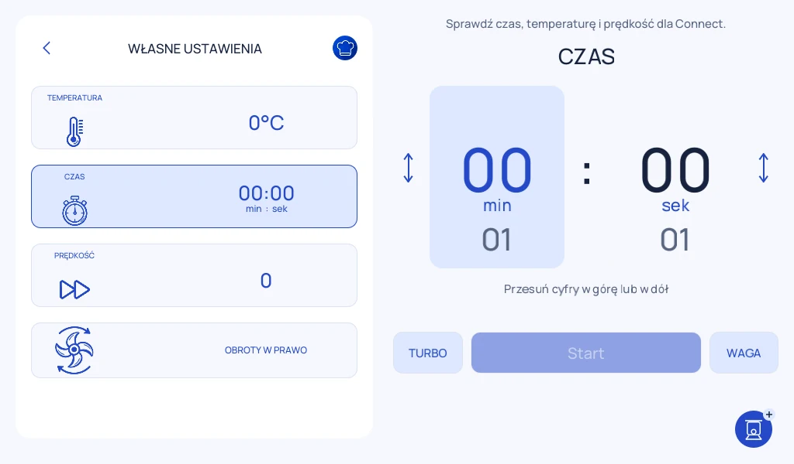
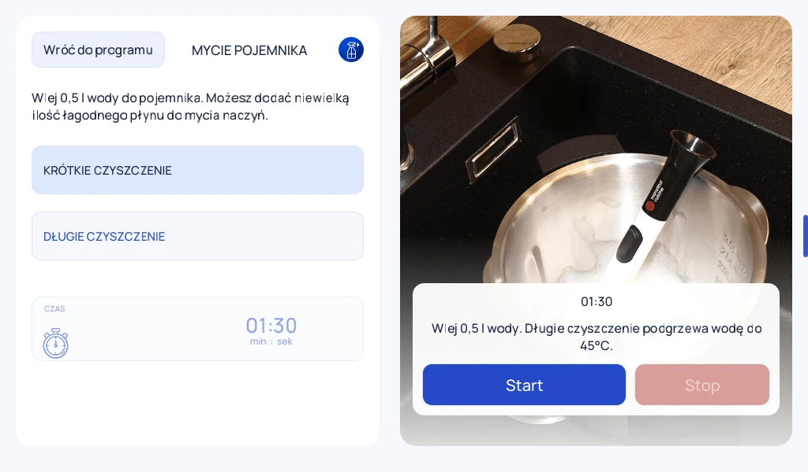
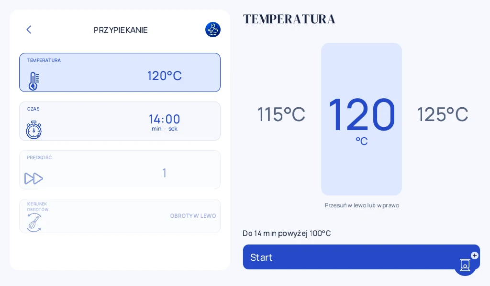
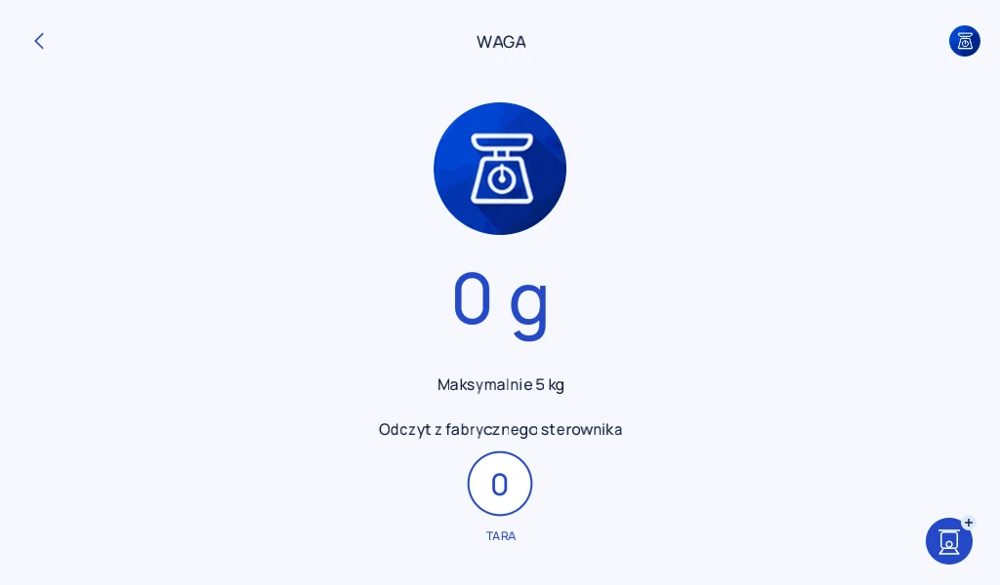
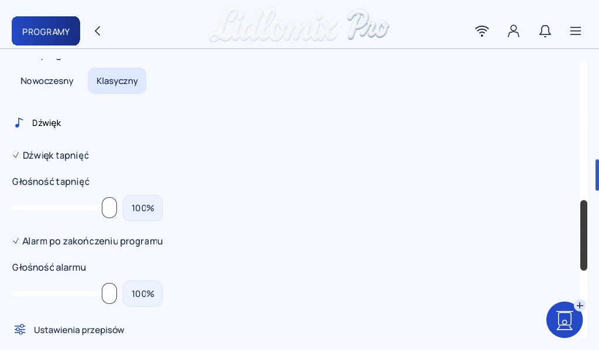

Monsieur Cuisine Connect ·
Programmi, schermo e suoni nella 0.17.8
Dopo il rilascio di 0.16.4 ho migliorato il supporto dei programmi sullo schermo Connect. È possibile vedere l'inizio quando si imposta il tempo, mentre si lavora, si può mettere in pausa, e il volume di clic e il segnale finale può essere ascoltato direttamente nelle impostazioni. Di seguito, mostro come gli schermi sono cambiati in un robot.
Iniziare visibile quando si imposta il tempo
In 0.16.4, il messaggio delle impostazioni potrebbe andare sotto i pulsanti. Ho spostato gli indizi più in alto, e con le colonne di minuti e secondi ho aggiunto frecce verticali. Nei redattori di temperatura e velocità, la freccia orizzontale mostra la direzione di movimento. L'ora attuale rimane nel campo di sinistra del programma.



Nei programmi che supportano la pausa dopo aver premuto Start appare Pause, e sotto di esso Stop. Dopo la pausa, è possibile riprendere il ciclo dalla fermata. La barra d'azione è allineata all'ultimo campo a sinistra. A un'altezza limitata, la priorità è data ai pulsanti. Nella cottura a vapore, l'interruttore di calore prima di contare si trova direttamente sopra Start.

Pressatura, Cuocere, Lavaggio e Riscaldamento dell'acqua
- La ricottura inizia con un set di 2:00 invece di 0:45.
- Cuocere per impostazione predefinita seleziona 130°C. Al di sopra di 100°C è possibile impostare fino a 14 minuti e a 100°C o meno a 30 minuti. Il cambiamento di temperatura mantiene l'intervallo di questo programma, cioè 5 secondi di funzionamento della lama e 30 secondi di pausa sul Connect testato.
- Lavare il contenitore ha una terza modalità, pulizia accurata. La prima fase dura 40 minuti a 60°C e 2 a destra. Lo schermo poi ti chiede di sostituire l'acqua e confermare un breve ciclo di risciacquo.
- Il riscaldamento dell'acqua mostra nuovamente l'icona del bollitore e la lettura della temperatura corrente. Quando si legge sotto l'intervallo di misura, lo schermo visualizza "acqua fredda".







Turbo, Peso e icone più chiare
Turbo ha un'icona più grande, un pulsante centrale e un accenno sotto di esso. Mantenere la manopola fisica corre il Turbo solo sullo schermo Turbo attivo. Lasciare andare la manopola ferma il motore. Dalla scorciatoia si può ancora tornare al programma attuale o la ricetta.


Temperatura, tempo, velocità e direzione di rotazione hanno un asse comune di valore. A sinistra, le firme e le icone sono allineate tra loro. I testi di interfaccia usano il taglio Manrope con i caratteri polacchi. Le icone con i nomi del programma sono aumentate da 32 a 48 pixel, e il pulsante dello strumento galleggiante del 30%. Una grande icona e un messaggio di lettura più chiaro sono rimasti sullo schermo del peso.



Clic e segnale di fine
In Impostazioni → Il suono può essere attivato individualmente su rubinetti e allarmi, così come impostare il loro volume da 0 a 100%. Una volta che il cursore viene rilasciato, un campione con il volume selezionato può essere sentito. Un altro allarme di ascolto sostituisce quello precedente. I valori predefiniti in 00.17.8 sono del 10% per i rubinetti e dell'80% per gli allarmi. L'allarme viene giocato una volta dopo l'estremità naturale del programma.



Torna alla selezione dell'applicazione dopo l'avvio del robot
Collegare il modulo 0,9 ripristina il servizio di navigazione di avvio rapido dopo che il robot è acceso e dopo gli aggiornamenti del modulo. Dopo il riavvio, Android ha disattivato l'avvio di navigazione mentre Firefox era ancora in linea. Ho controllato entrambi i percorsi sul dispositivo dopo il riavvio. Trascinare la maniglia dal bordo destro al ritorno a sinistra nella schermata di selezione sia con Lidlomix Pro che con l'applicazione di fabbrica Monsieur Cuisine.

Elenco delle modifiche da 0.16.4
- 0.16.4 — Schermi completi di Scale, Turbo e scorciatoia Lavare, e tornare alla fase attuale del programma o della ricetta. Entrata di scarico precedente.
- 0.16.5 — Aggiungere una pulizia a terra con risciacquo dopo la conferma e ripristinare lo schermo di riscaldamento dell'acqua.
- 0.16.6 — Aggiustazioni alle modalità di lavaggio e cottura del riso e al messaggio «acqua fredda».
- 0.16.7 — Avvio, Pausa, Ripresa e Stop in programmi di supporto in pausa, 2 minuti in impastatura, e tempo di cottura più lungo dopo l'abbassamento della temperatura.
- 0.16.8 — visibile Avviare durante la modifica, sovrapposizione, il riscaldamento accanto a Start e la manipolazione della manopola sullo schermo Turbo.
- 0.16.9 — più ampio Avvio in barre di programma, icona rotazionale più grande, e il supporto Turbo in movimento più basso.
- 0.16.10 — schermata Turbo centrale con un'icona più grande e un gruppo di punte.
- 0.16.11 — bordo inferiore della barra d'azione allineato con l'ultimo campo dei parametri.
- 0.16.12 — iscrizioni direzionali di tempo e velocità.
- 0.16.13 — assi comuni di icone e firme, tagliare Manrope e una visualizzazione più chiara di scale.
- 0.16.14 — tasti freccia e suggerimenti di gesto più grandi in tempo, temperatura e selettori di velocità.
- 0.16.15 / 00.17.5 — icone dell'intestazione più grandi del 50%, strumenti galleggianti più grandi del 30% e un'icona sul Peso. Il rilascio ha ricevuto il numero 00.17.5 dopo la numerazione è stato organizzato.
- Collegare il modulo 0,9 — prima di eseguire il supporto del gesto indietro all'avvio del robot e avviare automaticamente dopo l'aggiornamento del modulo.
- 00.17.6 — clic, allarme di fine programma una volta e interruttori e cursori separati.
- 00.17.7 — più grande selezione e scatole di ascolto dopo il rilascio della diapositiva, con il volume di allarme predefinito 80%.
- 00.17.8 — Volume del rubinetto predefinito ridotto al 10%.
Testato su Connect
Sul lavoro, ho controllato la visibilità Start in editor, eseguire e fermare la manopola Turbo, tornare con un gesto da entrambe le applicazioni dopo il riavvio, e giocare un clic e un allarme dopo un breve ciclo. Ho anche controllato che il rilascio di entrambi i cursori produce un campione con il volume selezionato.